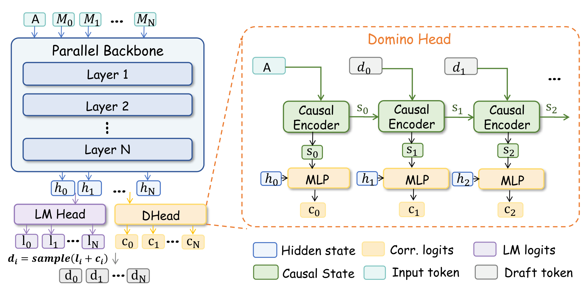
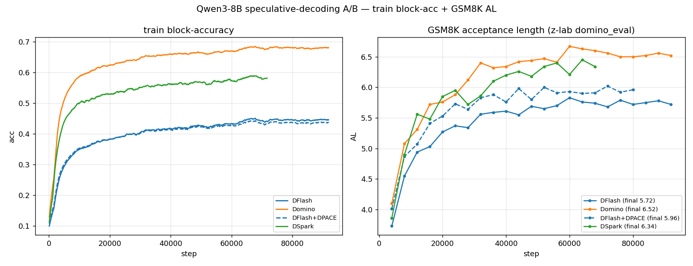
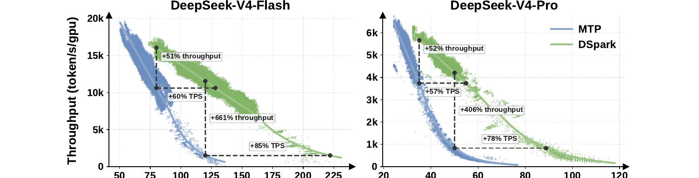

DSpark vs Domino: Same DFlash Backbone, Different Correction Heads
- Author:
ModelOpt Team
- Date:
July 13, 2026
- Tags:
speculative-decoding, dflash, dspark, domino, architecture
DSpark (DeepSpec) and Domino both build on block-parallel DFlash draft generation but diverge sharply in their token-level correction heads. DSpark uses a stateless VanillaMarkov head that is fast and parallelizable during training; Domino uses a GRU that is more expressive but sequential at inference. See the DSpark and Domino papers in References for the original method descriptions.
Highlights
Both systems share the DFlash block-parallel backbone, so their parallel draft throughput starts from a similar foundation.
DSpark defaults to VanillaMarkov: stateless
W1andW2embedding lookups with no hidden state to thread through.Domino uses
nn.GRUand carries recurrent state across draft positions.Both correction heads are sequential at inference because
x_{k-1}must be sampled before stepk.DSpark adds a hardware-aware prefix scheduler through
confidence_head; Domino does not include this mechanism.
{kind=link}
Where They Diverge: The Correction Head
DSpark uses a first-order Markov transition. For each draft position k:
e_{k-1} = W1[x_{k-1}]
bias_k = W2 * e_{k-1}
p_k = softmax(U_k + bias_k)
x_k ~ p_k
The correction at position k depends only on x_{k-1}; no RNN hidden state threads across steps. The dominant work is a table lookup and projection rather than a recurrent rollout.
Domino uses a GRU correction head. A recurrent hidden state accumulates information about the draft prefix and is concatenated at readout:
gru_h_k = GRU(input_k, gru_h_{k-1})
p_k = softmax(U_k + W * [h_k; gru_h_k])
x_k ~ p_k
{kind=link}

The figure below compares training acceptance length on Qwen3-8B across the DFlash baseline, Domino GRU, and a DSpark implementation.
{kind=link}

Correction Head Overhead
System |
Per-step compute |
State carried |
|---|---|---|
DSpark VanillaMarkov |
|
None |
Domino GRU |
Full GRU cell over a high-dimensional input |
Recurrent hidden state |
Both heads must unroll left-to-right at inference. The practical difference is per-step cost: VanillaMarkov is much lighter, while the GRU can condition on a richer prefix history.
Additional DSpark Machinery
DSpark includes a hardware-aware prefix scheduler through a confidence head. The scheduler estimates acceptance probability and selects how many draft tokens to submit for verification. It is a serving-time throughput optimization, not a draft-quality feature.
For MoE models, DSpark checkpoints also include manifold-constrained Hyper-Connections. Dense models use the simpler backbone plus Markov-head path.
{kind=link}

Takeaways
DFlash draft generation is shared; the correction head is the main differentiator.
VanillaMarkov is cheaper per step than GRU, although both are sequential at inference.
GRU is more expressive, but the extra recurrence may not translate into a large acceptance-rate gain.
DSpark’s design is broader: VanillaMarkov, GatedMarkov, and RNN-style heads all fit the same family.
The prefix scheduler affects serving throughput decisions, not correctness.
References
Xin Cheng et al., DSpark: Confidence-Scheduled Speculative Decoding with Semi-Autoregressive Generation, arXiv:2607.05147, 2026.
Jianuo Huang et al., Domino: Decoupling Causal Modeling from Autoregressive Drafting in Speculative Decoding, arXiv:2605.29707, 2026.
Links
These public references were checked during review.